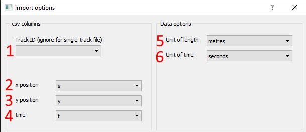
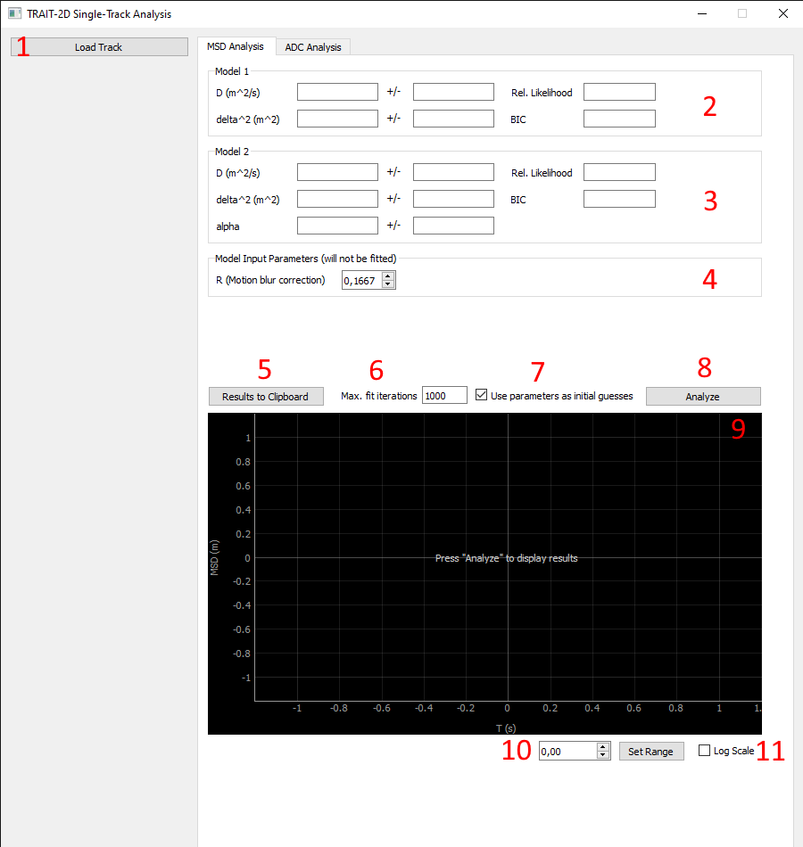
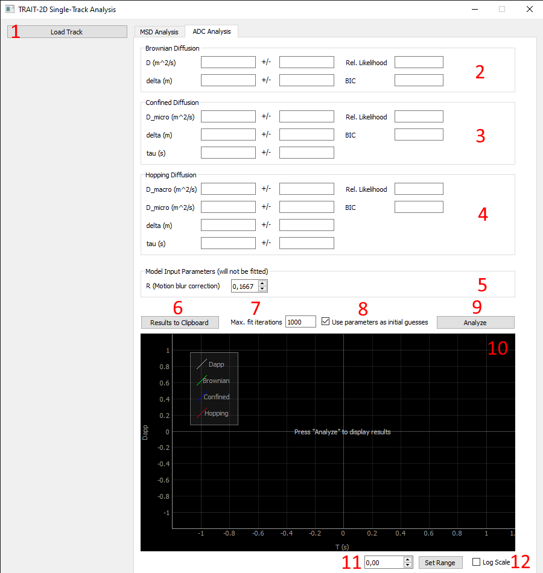

Analysis GUI¶
The analysis GUI allows single-track analysis without the need for writing Python code or notebooks yourself. It allows to import single tracks from .csv files and then apply MSD or ADC analysis to them.
Starting the GUI¶
The GUI can be started from command line by entering trait2d_analysis_gui. The GUI and its components are described below.
Description of the GUI¶
Data Import Dialog¶
- Select track ID: Select the ID of the track you want to import. Leave blank for files containing only a single track.
- Select x position column: Select the name of the column containing the x positions.
- Select y position column: Select the name of the column containing the y positions.
- Select time column: Select the name of the column containing the time values.
- Select unit of length: Select the unit of the x and y positions.
- Select unit of time: Select the unit of the time values.
MSD Analysis Tab¶
- Load new track: Opens the Data Import Dialog to load a new track.
Warning
Loading a new track will clear the current track and analysis results.
- Linear model results: Displays the latest analysis results for the linear model.
- Power model results: Displays the latest analysis results for the power model.
- Input R: Input value for the point scanning across the field of view that will be used for all models.
- Copy results to clipboard: Copy all MSD analysis results to the clipboard as a Python dictionary.
- Select maximum fit iterations: Select the maximum number of iterations used internally by
scipy.optmizeuntil the fit aborts. - Use previous results as initial guess: If checked, the parameter values from the result fields (2. and 3.) will be used as initial values for the next fit.
Note
You can enter your own values in the result boxes to choose initial values for the fits yourself.
- Run analysis: Run MSD analysis on the currently loaded track with the current settings.
- Plot window: Will display the fitted curves. Will only display after an analysis has been run.
- Set fit range: Set a maximum fit time
tmax. Models will only be fitted in the time interval[0, tmax].
Note
The maximum fit time tmax can also be set by dragging the white vertical line in the plot window.
- Scale time values logarithmically: If checked, the time axis is scaled logarithmically in the plot window.
ADC Analysis Tab¶
- Load new track: Opens the Data Import Dialog to load a new track.
Warning
Loading a new track will clear the current track and analysis results.
- Brownian diff. results: Displays the latest analysis results for the Brownian diffusion model.
- Confined diff. results: Displays the latest analysis results for the Confined diffusion model.
- Hopping diff. results: Displays the latest analysis results for the Hopping diffusion model.
- Input R: Input value for the point scanning across the field of view that will be used for all models.
- Copy results to clipboard: Copy all ADC analysis results to the clipboard as a Python dictionary.
- Select maximum fit iterations: Select the maximum number of iterations used internally by
scipy.optmizeuntil the fit aborts. - Use previous results as initial guess: If checked, the parameter values from the result fields (2., 3., and 4.) will be used as initial values for the next fit.
Note
You can enter your own values in the result boxes to choose initial values for the fits yourself.
- Run analysis: Run ADC analysis on the currently loaded track with the current settings.
- Plot window: Will display the fitted curves. Will only display after an analysis has been run.
- Set fit range: Set a maximum fit time
tmax. Models will only be fitted in the time interval[0, tmax].
Note
The maximum fit time tmax can also be set by dragging the white vertical line in the plot window.
- Scale time values logarithmically: If checked, the time axis is scaled logarithmically in the plot window.